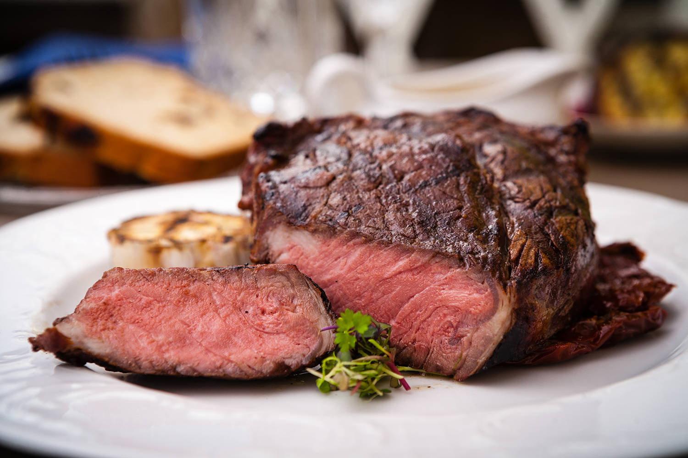

Entrecote Beef Recipe
Entrecote is a premium cut of beef steak taken from the rib area, typically between the 9th and 11th ribs. It’s known for its tenderness, rich marbling, and deep flavor. Often grilled or pan-seared, entrecôte is best served medium-rare to preserve its juiciness and texture. In French cuisine, it's a classic bistro steak, commonly accompanied by sauces like béarnaise or peppercorn.
Ingredients
- Entrecote beef
- Salt
- Black Pepper
- Butter
Instructions
- Take the entrecôte out of the fridge and let it come to room temperature (about 30 minutes).
- Season both sides of the steak generously with salt and black pepper.
- Heat a heavy skillet or grill pan over high heat until very hot.
- Add a small amount of butter to the pan and immediately place the steak in.
- Sear for 2–3 minutes on each side for medium-rare, adjusting time based on thickness and doneness preference.
- Optionally, baste the steak with additional butter during the last minute of cooking.
- Remove the steak and let it rest for 5 minutes before serving.

Back to Recipes